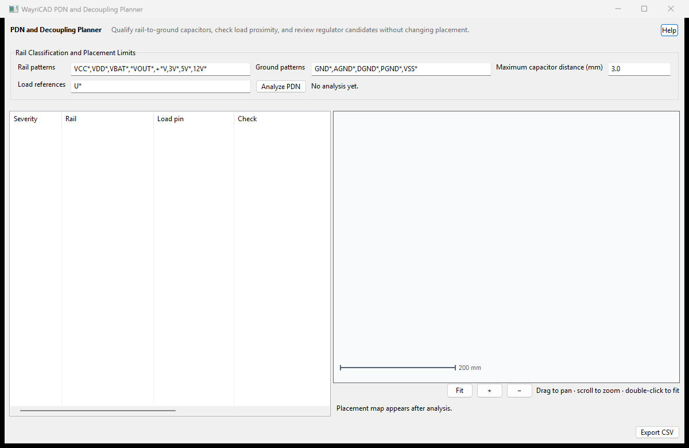

A capacitor qualifies only when its reference matches the capacitor rule and it has pads on both the examined rail and a configured ground net.
This is not an AC/transient PDN solver. Verify capacitor models, mounting inductance, planes, vias, package impedance, anti-resonance, current and thermal margins separately.